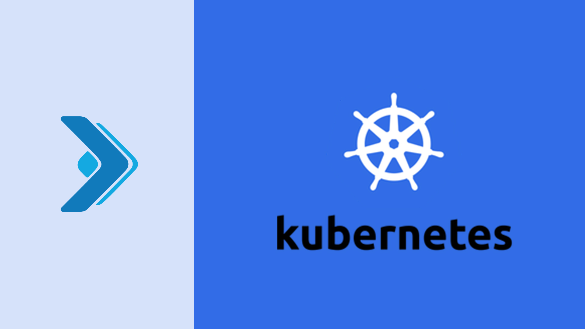

This page consists of some of my experience recordings around the DevOps Tools or methodologies, i have come across in my career. I have tried and gathered most of them keeping in mind the confidentaility of the aplications i am working on.
Here are some Professional Certifications i have been awarded with :
 A collection of my Python Scriptlets and some automations use cases i worked on
A collection of my Python Scriptlets and some automations use cases i worked on
Please Note : Code for some cannot be seen for some of the use cases for CONFIDENTIALITY reasons

This collection contains some ARM Templates and some mentions around Azure DevOps

This Collections contains some Terraform files that have been authored by me during my Azure Cloud Deployments.

This Collection contains some Kubernetes Object Definitions which i have been working on.

This collection conatins a whole lot of DevOps Tool concepts which i am well-verse with, for example - Kubernetes, Ansible and Jenkins Pipelines (Sample)
Contains some of my Decalarative Pieplines (with most infos removed because of a term called CONFIDENTIALITY)
{kind=link}
{kind=link}